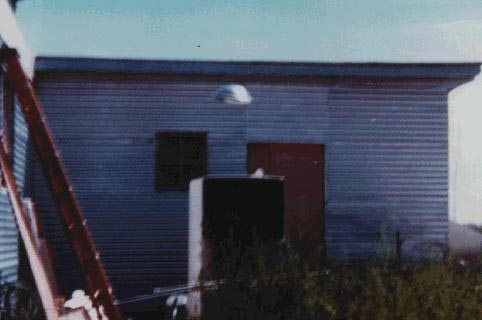

Couverture de Argosy UFO ce mois-là
Le CNES annonce officiellement la naissance du GEPAN pour étudier prioritairement les phénomènes aérospatiaux que ses
experts n'étaient pas parvenus à identifier près du Centre Spatial de Toulouse (CST), sous la direction de Claude Poher.
A Barcelonette (Alpes-de-Haute Provence), plusieurs
personnes constatent la présence dans le ciel de 2 objets évoluant sans bruit et émettant une vive lueur rouge
par intermitence. Les témoins remarquent également que ces objets émettent une lueur blanche en direction du sol
L'enquête de gendarmerie déterminera que 2 appareils "PUMA-SA/330" de la base école du Cannet-des-Maures (83) ont effectué un vol de nuit se livrant à des exercices (dont des éclairages au sol) dans le secteur d'habitation des témoinsGEPAN : PAN classé A.
A Eygurande (Corrèze), une personne remarque la présence de 2
"énormes" boules lumineuses situées à l'Est de sa maison, paraissant à 50 m du sol et immobiles, éclairant
fortement le sol. Au bout de 1 mn et avant la disparition complète du phénomène, le témoin entend un bruit de
pales d'hélicoptère et voit une lumière jaune très intense éclairer le secteur GEPAN : PAN classé C.
A Chateaurenard (Loiret), plusieurs témoins observent les
déplacements de plusieurs points lumineux qui évoluent en changeant de couleur à une grande distance que les témoins
ne peuvent évaluer plus précisément. Les enchaînements des déplacements se poursuivent jusqu'à ,
où le phénomène disparaît brusquement GEPAN : PAN classé C.
A St. Brides (Pembrokeshire, Wales, UK), parties jouer sur le terrain de Middle Cliff, à St. Brides, non loin de
leur maison à la ferme Ripperston, des soeurs jumelles voient un personnage en combinaison argentée marcher en
s'éloignant à 60 ou 70 pieds d'elles ; il arrive jusqu'à une haie, semble traverser la barrière de barbelés qui lui
est adjacente, puis disparaît. De l'aure côté du terrain un objet semblable à une assiette blanc argenté,
avec une lumière rouge, est vu à au sol ; une rampe semblable à un escalier sort et une "boîte rouge est éjectée le
long de l'escalier vers le sol. La mission achevée, les escaliers se rétractent, une porte dans l'objet se ferme et
l'objet décolle. Les jumelles courent chez elles chercher leur mère, mais aucun objet ni personnage n'est trouvé
dans le champ, bien qu'un objet ait été vu à nouveau voler vers la mer. De grandes empreintes de pas sont trouvées
dans l'herbe sur le site de l'atterrissage Humcat 1977-27 < Randall Jones Pugh pour BUFORA.
A Milford Town (Wales, UK), une lumière éclatante brille dans la chambre d'une adolescente de 17
ans, la réveillant. En regardant dehors elle voit un disque argenté en survol, avec une une lumière verte autour de
son bord. Un petit humanoïde apparaît alors à la fenêtre. Le petit homme a de long cheveux, des sourcils inclinés,
des yeux normaux, et un nez incurvé. Il porte une combinaison argentée d'un seul tenant, avec un col remontant
jusqu'en haut de son cou et des mitaines sur ses mains. L'être se tient là fixant la jeune fille qui ferme alors les
volets et retourne dans son lit HC addition # 2008Randall Jones Pugh & F W Holiday, The Dyfed Enigma.
Près de York (North Yorkshire, Angleterre), Roger Crowther (22 ans), observe un
ovni, ainsi que plusieurs autres personnes Roger Crowther.
A Milford Town, Wales (UK), une femme se réveille pour voir un petit objet en survol dehors à
travers sa fenêtre. êt a une base ronde et un compartiment semblant fait de verre au sommet. Un rayon de lumière
verte encercle le bord de l'objet ainsi que des ouvertures sur la section de base. Alors que l'objet est en survol
au niveau du sommet des toits un personnage en sort et commence à marcher au milieu des airs. L'être est petit avec
un visage ovale, de longs cheveux chatains ; des sourcils inclinés et des yeux normaux. Il porte une combinaison
argentée d'un seul tenant. L'entité marche dans les airs pendant quelques moments puis revient toujours en marchant
dans l'objet, qui décolle alors à grande vitesse (même témoin ê de mi-mai) HC addition # 2009Randall Jones Pugh & F W Holiday, The Dyfed Enigma.
A Privas (Ardèche), une étudiante fait 3 observations
d'une boule jaune qui se déplace lentement avant de disparaître, le tout sans bruit. Un autre témoin viendra sur les
lieux de l'observation le lendemain 02:00/04:00. A la verticale de l'endroit d'observation indiqué par le premier
témoin, il constatera la présence de la Lune. L'étudiante a probablement fait une observation astronomique de la
Lune.
A Viteaux (Côte-d'or), 2 personnes observent au-dessus de
l'agglomération une boule lumineuse rouge-orangée apparemment située à basse altitude et se déplaçant lentement du
sud au nord. Aucun bruit n'est entendu durant l'observation qui dure 5 à 6 mn Le GEPAN concluera à une observation astronomique probableGEPAN : PAN classé B.
Photographie ce moi-là au Nouveau-Mexique. Une simple maquette ?

Photographie (ci-contre) au Nouveau-Mexique.
John Gilbert, le ministre de la défense britannique, indique dans une lettre à des responsables du MoD, Je suis inondé en ce moment de représentations d'ovnis présentés comme
ayant été vus dans le Pembrokeshire, et demande si des enquêtes sont en cours. On lui répond : Nous examinons
des rapports détaillés de phénomènes inexpliqués pour voir s'ils ont une incidence sur la défense nationale.